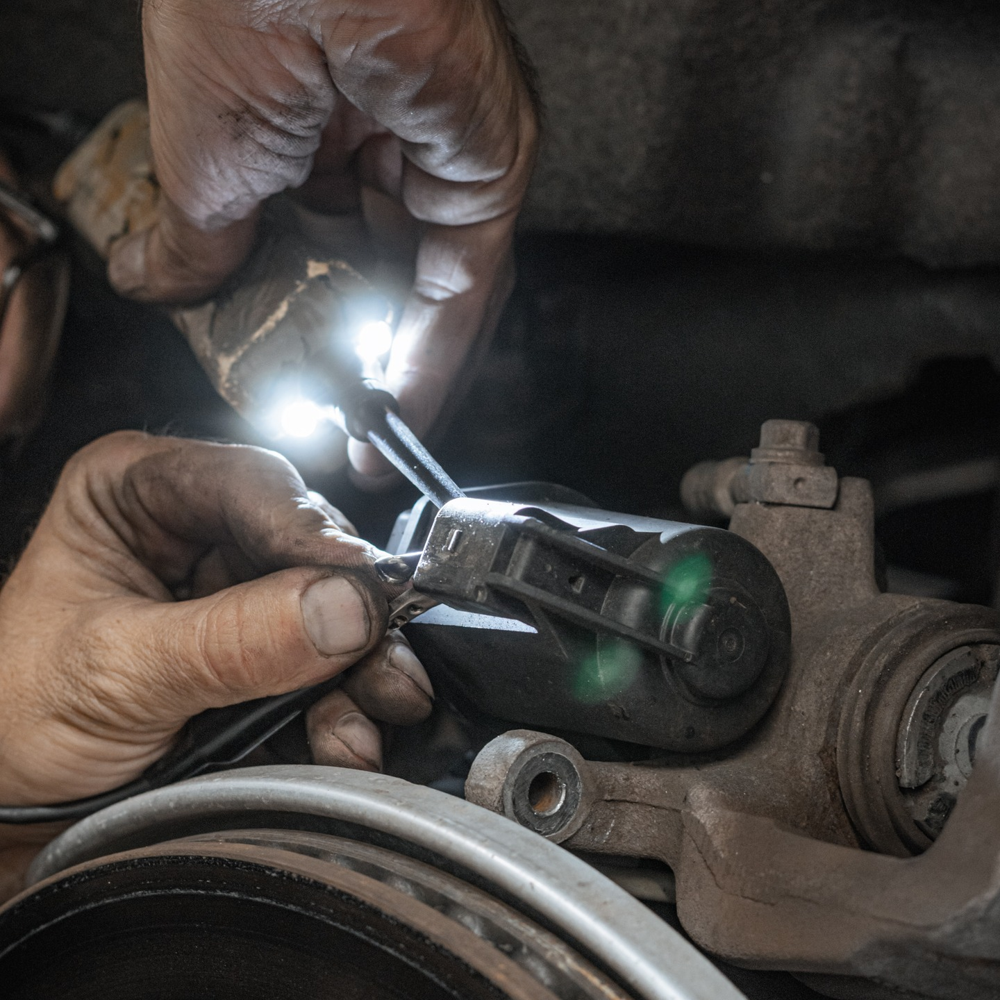
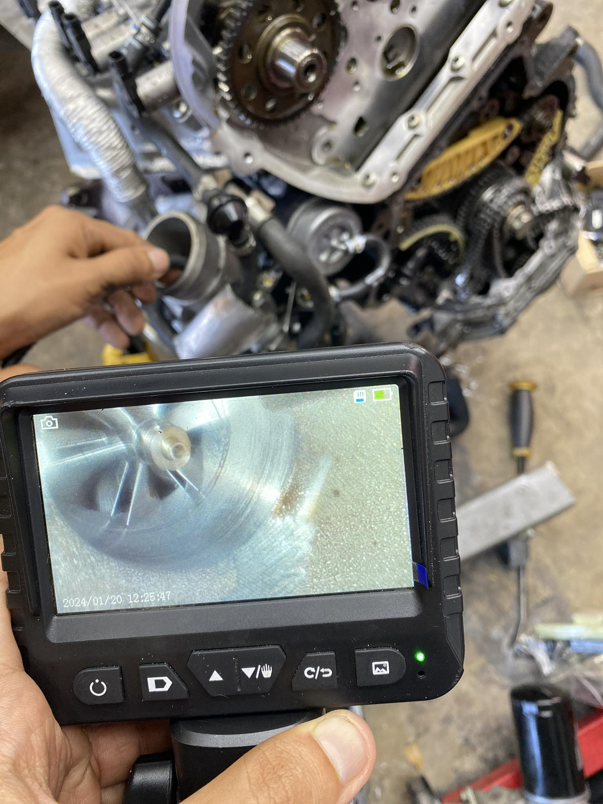

Diagnostics & Electrical
Diagnostics & Electrical
Modern European vehicles rely on multiple control modules and networked electrical systems. A fault code only indicates where to start testing - it does not identify the actual failure.
We follow a diagnostics-first process built around verification, testing, and confirmation - not assumptions - so repairs are accurate, controlled, and completed correctly the first time.


Our 4-Step Diagnostic Method
- Condition - We confirm the customer concern and document the exact operating conditions under which the fault occurs (cold start, load, temperature, driving state).
- Cause - Using OEM-level scan data, electrical load testing, and network communication analysis, we isolate the true failure point - not just the symptom or stored fault.
- Correction - Only after the cause is verified do we recommend repairs, parts, or system corrections, presented with clear options and cost transparency.
- Confirm - After repairs, we perform post-repair testing, live data validation, and road testing to confirm the issue is fully resolved and no related faults remain.
What this service includes
- OEM-level scans with live data analysis
- Electrical circuit testing and load verification under real operating conditions
- Control module and CAN network communication checks
- Documented findings with repair recommendations and next steps
Why this matters
Electrical and drivability issues on European vehicles are often caused by wiring faults, signal loss, or system communication issues - not failed parts.
Without proper testing, parts replacement becomes guesswork and frequently leads to repeat failures.
Designed for owners who value accuracy over shortcuts. This service is not intended for parts replacement without proper testing.
Common questions
Proper diagnostics require time, testing, and data analysis. This process protects you from unnecessary repairs.
No. All findings and recommendations are presented before any repairs are performed.